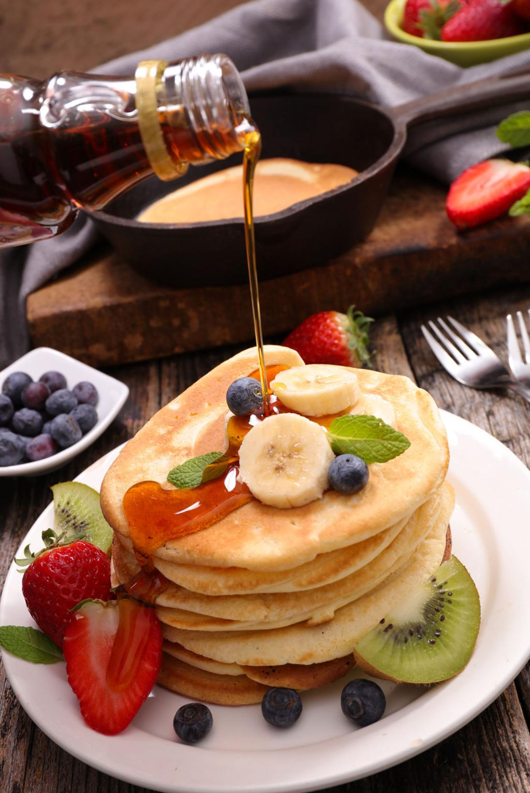

Panquecas
Home

Descrição
Uma panqueca é uma massa fina e redonda.
A receita básica leva farinha, leite e ovos. Pelo mundo, possui variações de panquecas doces ou salgadas
(recheadas com carne moída ou frango).
Ingredientes
- 1 xícara de farinha
- 1 xícara de leite
- 1 ovo
- 1 colher de sopa de açúcar
- 1 colher de chá de fermento
Como fazer
- Misture todos os ingredientes até obter uma massa homogênea.
- Despeje pequenas porções em uma frigideira quente.
- Cozinhe até surgirem bolhas e vire a panqueca.
- Repita até terminar a massa.
- Sirva com mel, frutas ou calda de sua preferência.